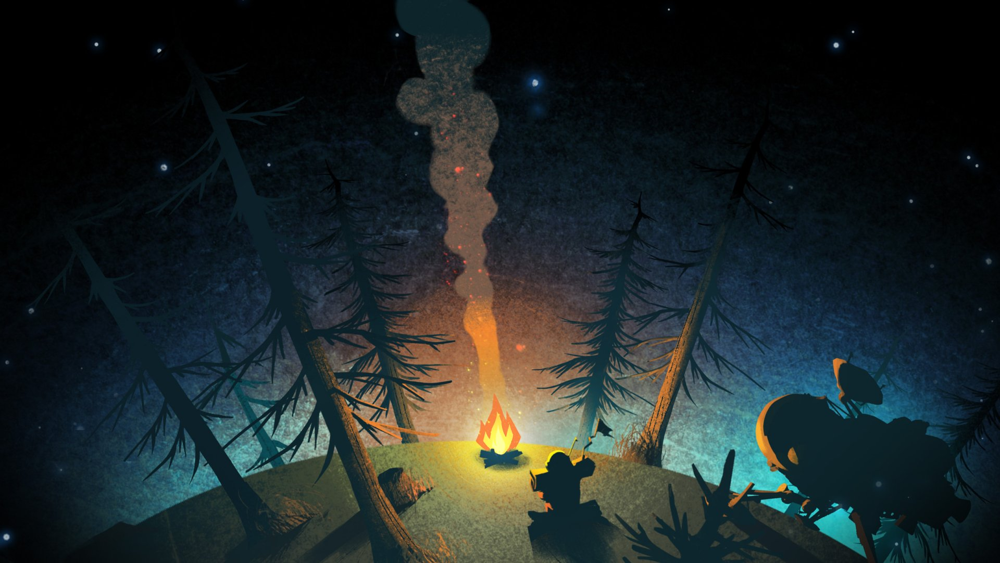
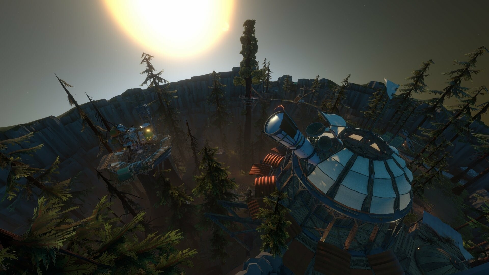
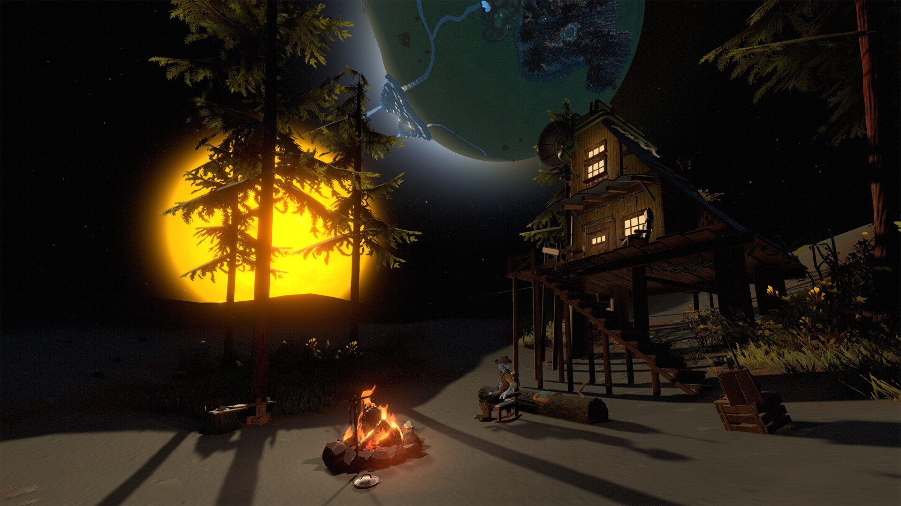
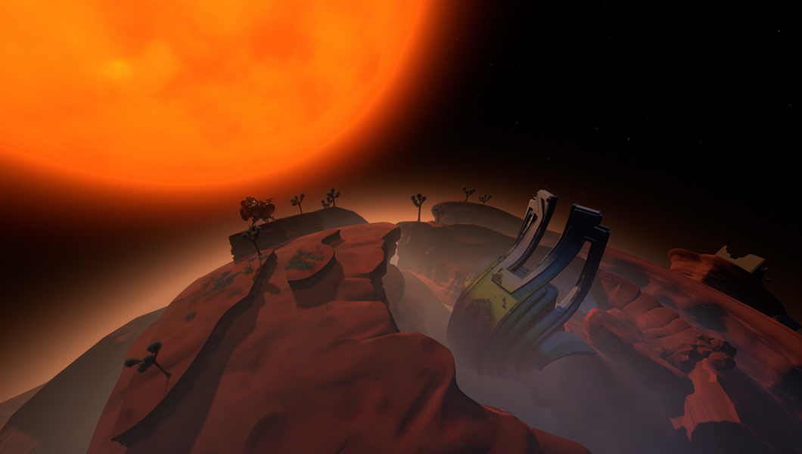

Outer Wilds: el juego que no te defraudará
Autor del blog: Mihai Teodor Pastrama
Sobre el Juego
Outer Wilds es un juego de exploración y aventuras en mundo abierto con un fuerte enfoque en la narrativa y la física. Desarrollado por Mobius Digital, pone al jugador en la piel de un astronauta novato de la raza extraterrestre Hearthian, quien forma parte del Outer Wilds Ventures, un programa espacial independiente dedicado a explorar su sistema solar.
El juego se centra en la curiosidad, el descubrimiento y la resolución de misterios. Equipado con una trampa mortal nave espacial y un equipo de exploración, el jugador viaja entre planetas, cada uno con sus propias características únicas, fenómenos cósmicos y secretos enterrados en el tiempo. A medida que avanzas, te encuentras con ruinas de una antigua civilización, pistas sobre su destino y preguntas que desafían la lógica del tiempo y el espacio.
Sin combates ni objetivos tradicionales, Outer Wilds recompensa la observación, la experimentación y la creatividad del jugador, ofreciendo una experiencia que mezcla la exploración científica, la ciencia ficción y el asombro cósmico en un mundo que evoluciona constantemente a su propio ritmo. 🚀✨
Calificaciones de los críticos
- Metacritic: 85/100
- IGN: 8.4/10
- GameSpot: 9/10
- PC Gamer: 89/100
- The Guardian: 5/5
7 Datos sobre la creación de Outer Wilds
- Proyecto Universitario 🎓: Outer Wilds comenzó como un proyecto de tesis de Alex Beachum en la Universidad del Sur de California (USC).
- Crowdfunding en Fig 💰: El desarrollo fue financiado parcialmente a través de la plataforma de crowdfunding Fig, recaudando más de 125,000 dólares.
- Desarrollado por Mobius Digital 🛠️: El estudio Mobius Digital tomó el proyecto y lo expandió en un juego completo.
- Publicación por Annapurna Interactive 📢: La editorial Annapurna Interactive ayudó a llevar el juego a un público más amplio.
- Inspiraciones 🔭: Influencias clave incluyen la exploración espacial, The Legend of Zelda: Majora’s Mask y 2001: A Space Odyssey.
- Premios y Reconocimientos 🏆: Ganó el premio Seumas McNally Grand Prize en el Independent Games Festival (IGF) 2015 y el Best Game 2019 en los BAFTA Games Awards.
- Retrasos y Desafíos Técnicos ⏳: El juego enfrentó múltiples retrasos debido a su diseño no lineal y los complejos sistemas físicos.
La belleza de Outer Wilds
¡Clica en el tema principal del juego y contempla el arte!




Versiones del juego
| Outer Wilds | Outer Wilds: Echoes of the Eye | Outer Wilds: Archaeologist Edition |
|---|---|---|
| Incluye: Juego base | Incluye: DLC | Incluye: Juego base y DLC |
| Precio: 24,99 € | Precio: 14,99 € | Precio: 37,98 € |